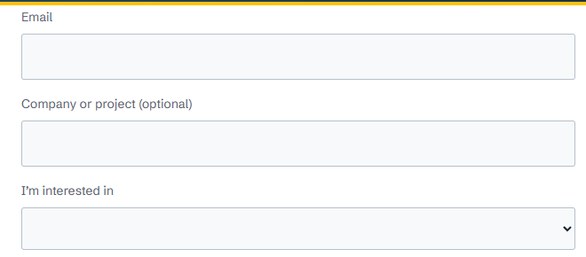
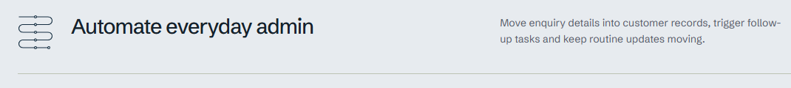
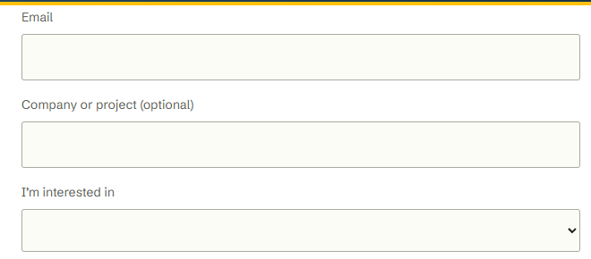
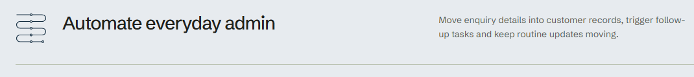
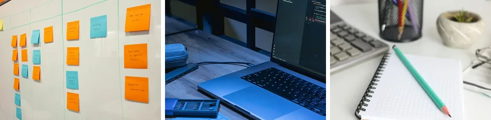
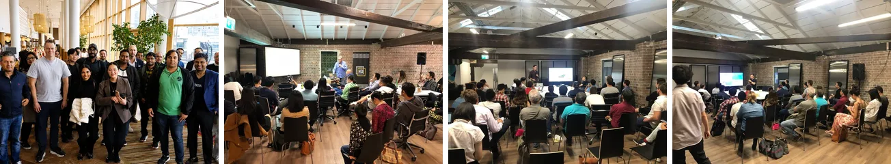

Die Seite hält sich heute zu 8 von 10 an ihr Markenblatt. Das Blatt ist aber nur ein Entwurf, abgeschrieben von dem, was die Seite schon tut. Diese drei Entscheidungen machen daraus feste Regeln.
Antwort im Chat, zum Beispiel: 1A, 2 alle behalten, 3AFrage 1
Heute mischt die Seite zwei Grau-Familien. Kopfzeile, graue Bänder und die meisten Linien sind kühl, leicht bläulich wie das Navy. Text, Formularfelder und der Partner-Streifen sind warm, leicht olivgrün. Einzeln fällt das kaum auf, zusammen wirkt es unruhig. Die Bilder unten sind echte Aufnahmen der Seite.
Alles Grau leicht bläulich, passend zu Kopfzeile, Navy und den grauen Bändern. Ein Ton von oben bis unten. Beide Varianten sind gleich gut lesbar.


So sehen Text und Felder heute aus: leicht olive, Felder cremefarben. Dann müssten auch die grauen Bänder und Linien warm werden, sonst bleibt die Mischung.


Frage 2
Jede Familie hat eine Aufgabe auf der Seite. Was in keine Familie passt, wirkt fremd, auch wenn das Bild schön ist. Kunden- und Partnerlogos sind nicht Teil der Frage, die bleiben.
Grosses Bild oben auf der Startseite. Ein Bild.
Bleibt, steht festSchreibtisch, Notizen, Laptop. Titelbilder der Ratgeber-Artikel im Blog.
Empfehlung: behalten
Fotos von Meetups und Workshops. Seiten Community und Events.
Empfehlung: behalten
Porträts auf der Seite Über uns.
Empfehlung: behaltenMit KI erstellt, Filmlook mit Bewegungsunschärfe. Erscheinen, wenn man über die drei Leistungen auf der Startseite fährt oder sie anklickt. Drei Bilder.
Entschieden am 3. November: entfernt.Frage 3
Auf 10 Seiten stehen heute 31 verschiedene Schriftgrössen (gezählt an 1132 Textstellen, auf einem breiten Bildschirm). 802 Stellen liegen schon auf den acht Stufen unten. Die übrigen 330 würden auf die nächste Stufe rücken, meist um 1 bis 3 Pixel.
| Heute (Pixel) | Wo | Stellen | Neu |
|---|---|---|---|
| 7,5 | Zeile «TECH VENTURE» im Logo-Schriftzug | 10 | bleibt, gehört zum Logo |
| 10 bis 12 | Kleine Hinweise, Ortsangabe, Nummern 01 bis 04 | 52 | 13 |
| 15 | Listen, Absätze, Schrift im Knopf «Free consultation» | 90 | 16 |
| 17,5 | Kleine Überschrift über Abschnitten («Where we help») | 56 | 16 |
| 18 bis 19 | Einleitungssätze | 17 | 20 |
| 24 bis 30 | Karten- und Zwischentitel | 77 | 26 |
| 31,5 bis 40 | Grössere Zwischentitel | 10 | 34 |
| 43 bis 57,5 | Abschnittstitel | 16 | 46 |
| 66 | Titel Startseite | 2 | 68 |
Jede Schrift auf der Seite ist eine dieser acht Grössen. Neue Seiten nehmen nur diese.
31 Grössen bleiben. Die Seite sieht aus wie heute, die Schrift bleibt beim Markenwert 7 von 10.